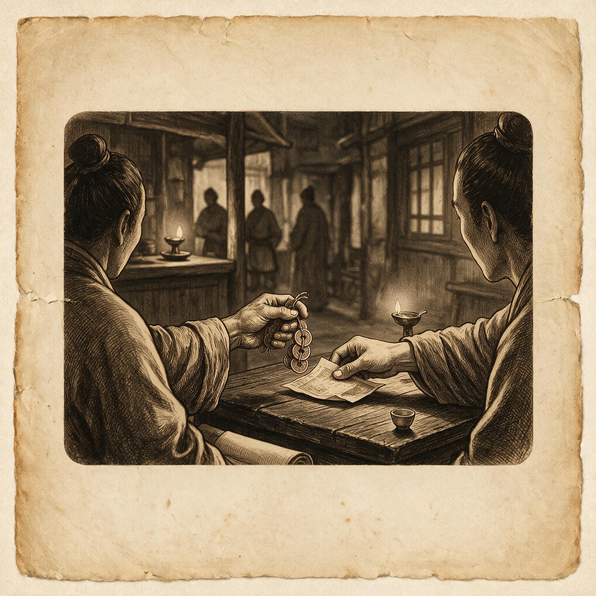

第 5 章
支付接口
所谓消费主义的隐秘力量，并非仅在于它制造了虚假需求，而在于它系统性地重塑了我们获取基本生存条件的通道。过去四十年的数据显示，中国城市家庭的食品支出占比明显下降，但住房、教育、医疗等刚性开支却持续攀升——这些绝非能被广告轻易制造的欲望，而是实实在在的生活必需。问题核心在于，这些基本需求的满足方式，已被悄然改造为一个标准化的支付接口：不再通过人情、协商或分配，而仅仅取决于一次支付动作能否完成。这是一个关于“通道”如何被格式化，从而隐形地支配我们生活的故事。
黄建东的工作是地推——地面推广。他是支付宝在移动支付大战中成千上万的地推人员之一。他的对手是微信支付的地推团队。

支付接口：历史出版插图
AI 生成插图，非史实影像。
两支队伍在2013到2015年间，把中国的街头巷尾变成了移动支付的战场。菜市场、小卖部、早餐摊、夜市、理发店、修鞋摊——这些信用卡从未真正占领的地方，被二维码扫了一遍。
说服摊贩的过程是缓慢的。黄建东们学会了先不急着推销。他们先买菜。买一把青菜，几个土豆，付现金。
第二天再来，买同样的东西，这次掏出手机，扫一下摊贩刚刚贴上的二维码。“你看，钱到了吧？”手机上显示到账通知。摊贩凑过来看，将信将疑。第三天再来，摊贩已经会主动说“扫码吧”。
到2016年，这场战争基本结束了。中国城市的街头，二维码已经无处不在。菜场的每一根柱子、每一块案板上都贴着二维码。卖菜的大姐把二维码过塑之后挂在脖子上，像一个工牌。
收钱的动作变成了一个机械动作：顾客扫码，摊贩看一眼顾客的手机屏幕确认支付成功，交易结束。没有钞票易手。没有找零。甚至没有对话。
支付接口在这个版本里，变得几乎完全隐形。在现金时代，支付是一个多步骤的物理过程：掏钱包、数钞票、递过去、找零、点清楚、收好。在信用卡时代，这个过程简化成递卡、刷卡、签名。在移动支付时代，这个过程简化成一个动作：扫码。
或者更准确地说，是点击。你点击手机屏幕上的“确认支付”。然后一切结束了。
摩擦消失了。支付不再是一个需要你停下来、专门去做的事情。它变成了你在手机上顺手完成的动作，和刷一条朋友圈、点一个赞没有本质区别。
支付接口从收银台那个具体的物理位置，迁移到了你的手机里。它随时随地可用。它和你的银行账户、你的信用记录、你的消费历史绑定在一起。它知道你买了什么、在哪里买的、什么时候买的、花了多少钱。它比你更了解你的消费习惯。
这个变化的速度令人眩晕。2012年，中国移动支付的交易规模是两万三千亿元。2016年，这个数字是一百五十七万亿元。四年，六十八倍。
一个菜场摊贩在2013年还不知道二维码是什么，到2016年，他每天收款的百分之八十来自扫码。他的账本从一本油腻的笔记本变成了手机里的一串数字。他不需要再数零钱、跑银行、存现金。钱直接进入他的电子账户。
方便是真实的。但另一件事也是真实的。在现金时代，摊贩和顾客之间存在着一种微弱的、但真实的人际互动。顾客挑菜，摊贩称重，报出价格。顾客掏钱，摊贩找零。在这个过程中，双方有眼神接触，有对话，有时还会聊两句天气或者菜价。支付是交易的一部分，也是人际接触的一部分。
在移动支付时代，这个环节被跳过了。顾客扫码，输入金额，确认支付，把屏幕亮给摊贩看一眼。摊贩点头。交易结束。双方可能自始至终没有说一句话。
这不是一个道德判断。摊贩们喜欢二维码。它省去了找零的麻烦，避免了收到假币的风险，账目清楚，效率更高。顾客们也喜欢。不用带现金，不用等找零，几秒钟完成支付。方便是真实的，效率是真实的。但支付行为的人际维度在消失，这也是真实的。更重要的是另一个变化。
移动支付把支付接口从收银台那个固定的物理位置解放出来，嵌入到每一个APP、每一个网页、每一个二维码里。你可以在凌晨两点躺在床上买东西。你可以在排队等咖啡的三十秒里完成一笔投资。你可以在刷短视频的时候一键下单主播推荐的商品。支付不再是一个需要你走到某个特定地点、做出某个特定动作的事情。它随时随地发生。它和你的日常生活无缝融合。
“无痛支付”这个词出现了。它描述的正是这种体验：支付变得如此便捷，以至于你几乎感觉不到它的发生。摩擦越小，支付的痛感越小。痛感越小，消费决策就越快、越不经过深思熟虑。降低支付摩擦，就是降低消费的心理门槛。心理门槛越低，消费越多。
2015年，支付宝推出了“免密支付”功能。用户授权之后，在一定金额以下的交易不需要输入密码。支付变成了一个完全无感的动作。你买一杯咖啡，店员扫你的付款码，钱自动扣掉。你甚至不需要掏出手机确认。微信支付紧随其后。到2018年，免密支付已经成为移动支付的标配。摩擦降到了零。
支付接口变得完全透明。你穿过它，就像穿过一扇自动门。门打开的时候你甚至没有注意到门的存在。
但自动门也是门。它仍然在判断谁能通过、以什么条件通过。只不过这个判断过程被隐藏了。当你在手机上点击“确认支付”的时候，后台有数十个系统在同时工作：你的银行验证你的账户余额或信用额度，支付平台的风控系统评估这笔交易的风险，商家的收单系统确认款项到账，你的消费数据被记录、分析、纳入你的用户画像。这些过程在几百毫秒内完成。你看到的只是一个绿色的勾，和“支付成功”四个字。
接口隐形了，但它并没有消失。它只是从可见的物理关卡，变成了不可见的数字关卡。你感觉不到它的存在，直到你被它挡住。
被挡住是什么感觉？你的信用卡被拒付。你的支付账户被冻结。你的信用评分不够，无法开通免密支付。你是一个没有银行账户的人，无法使用任何电子支付。你是一个老年人，不会用智能手机，在这个扫码支付的世界里变成了一个“支付残疾人”。在这些时刻，隐形的接口突然变得可见。
它是一堵透明的墙。你撞上去的时候才知道它在那里。这就是支付接口的三次重大升级。从固定价格标签的物理关卡，到信用卡的抽象信用评估，再到移动支付的无感嵌入。每一步都在降低摩擦。每一步都在让接口变得更隐形。每一步都在让“通过”变得更容易——对那些具备条件的人。
对那些不具备条件的人呢？1895年，费城。一个女人走进沃纳梅克百货公司。她看中了一件大衣。标签上的价格是十二美元。她口袋里只有十美元。她问店员能不能便宜一点。店员指了指墙上的标语——“一件价格，童叟无欺”。她放下大衣，走出商店。她不具备通过这个接口的条件。标签上的数字就是数字。没有协商余地。
1958年，纽约。一个男人申请大莱卡。他填了表格，写了自己的职业和收入。大莱卡查了他的信用记录。他的记录不够好——有一次逾期还款。他的申请被拒绝了。他继续用现金。他不具备通过这个接口的条件。信用评分不够。没有商量余地。2018年，杭州。一个老人在菜市场买菜。他掏出一张二十元的钞票。
摊贩面露难色。“大爷，有零钱吗？我这一早上没收到现金，找不开。”老人翻遍口袋，没有零钱。他不会用手机支付。他的老年机没有扫码功能。他放下挑好的菜，走出菜市场。他不具备通过这个接口的条件。
数字鸿沟。没有商量余地。三个画面，跨越一百二十三年。同一种困境，换了三种形式。支付接口在技术上越来越先进，在体验上越来越便捷，但它作为一道关卡的逻辑始终未变：你具备通过的条件，门打开。你不具备，门关闭。
这个接口是谁设置的？固定价格的标签是百货公司设置的。它的标准是成本、利润和市场竞争。信用卡的信用评估是银行设置的。它的标准是收入、资产和还款记录。移动支付的免密支付是平台设置的。它的标准是账户活跃度、信用评分和风控模型。
在每一个阶段，设置接口标准的人，和通过接口的人，不是同一群人。前者是机构，后者是个体。机构设定条件，个体满足条件。满足不了的，被排除在外。
这不是一个阴谋论。百货公司设置固定价格不是为了排斥穷人。银行设置信用评估不是为了排斥低收入者。
移动支付平台设置免密支付不是为了排斥老人。它们的目标是效率、利润、风险控制。排斥只是这些目标的副产品。
但副产品也是产品。它真实地改变了谁能在什么条件下获取商品和服务。这个权力在变得越来越隐形。
在固定价格时代，你至少知道价格是多少，知道自己的钱够不够。在信用卡时代，你知道自己的信用额度，但你不一定知道银行是怎么算出这个额度的。在移动支付时代，你连“支付失败”都不一定知道原因。免密支付被拒的时候，APP上可能只显示“支付失败，请重试”。你不知道是因为余额不足，还是风控系统判定这笔交易有风险，还是网络出了问题。你只能重试，或者换一种支付方式。
接口变成了黑箱。你只能看到它让你通过还是不通过。你不知道它为什么做这个判断。
2019年，一个用户发现自己的支付宝免密支付被停用了。他打电话给客服。客服告诉他，系统判定他的账户存在风险。什么风险？客服说，具体原因无法告知，这是风控系统的自动判定。他问怎么恢复。
客服说，保持良好的使用习惯，系统会定期重新评估。他挂了电话，不知道自己做了什么，也不知道该怎么改正。
这不是一个孤例。在全球范围内，支付系统的自动化决策正在变得越来越普遍，也越来越不透明。算法决定了你的信用额度。算法决定了你的交易是否被批准。算法决定了你是否能使用某项支付功能。当算法说不的时候，你往往不知道原因，也无法申诉。你能做的，只是等待算法下一次评估。
现在我们可以回到那个反讽的画面了。1895年，费城的沃纳梅克百货公司。一个女人因为标签上的价格超出她的支付能力，和店员发生争执。她可以争辩。她可以要求见经理。她可以去另一家店碰运气。她有选择，虽然选择有限。她面对的是一个明确的、可见的障碍——十二美元的标价。她知道问题在哪里。
2019年，一个中国城市的用户。他的免密支付被停用。他打电话给客服。客服是机器人。机器人说“您的反馈已记录，请耐心等待”。他等了三天，五天，一周。没有回复。他再次拨打。这次转接到人工。
人工说“系统判定存在风险，具体原因无法告知”。他问怎么解决。人工说“建议您使用其他支付方式”。他挂了电话。他不知道自己面对的是什么。他只知道有一堵透明的墙，他撞上去了，但他看不见墙在哪里。
两个画面，跨越一百二十四年。在前一个画面里，障碍是可见的，人是可以对话的，问题是可以争辩的。在后一个画面里，障碍是隐形的，对话是不可能的，问题是无从申诉的。
支付的便捷性在上升。人的议价权在消失。这两件事同时发生了。这不是一个简单的“技术让人异化”的故事。移动支付给数亿人带来了真实的便利。菜场的摊贩不再需要数零钱。偏远山区的农民可以通过手机收货款。小额信贷通过支付数据触达了以前被银行排斥的人群。这些是真实发生的进步。支付接口的普及，确实让更多人接入了现代经济体系。
但普及不等于平等。接入不等于有议价权。你可以扫码支付，但你不能和扫码支付系统讨价还价。你可以用信用卡，但你不能和信用评分模型争辩。你可以享受免密支付的便利，但你不能问风控算法“为什么”。
在信用卡成为银行风控模型中的一串数字之前，它首先是一次晚餐后的尴尬。1949年秋天，弗兰克·麦克纳马拉在纽约列克星敦大道的Major's Cabin Grill请客户吃饭。结账时他掏不到钱包，只能让妻子从家里送钱过来。等待时他反复意识到的不是丢脸，而是餐厅老板愿意让他先签单离开——信用已经以私人信任的方式存在，只是没有变成一张随身凭证。
1950年2月，麦克纳马拉和合伙人成立大莱俱乐部。最初两百名会员多为曼哈顿中城公司经理，签约十四家餐厅。卡片是硬纸板做的，正面印姓名和编号，背面列餐厅名单。商户每笔赊账抽百分之七佣金，会员年费三美元。它还没有循环额度，月底必须结清。使用时，餐厅前台要打电话核对卡号，确认无欠款，再让客人签字。
但在收银台前，支付第一次不再表现为现金或讨价还价，而是出示卡片、核对名单、签字走人。能不能赊账从熟人之间的事，变成一张卡能否通过核验的事。协商没有消失，只是被移到了收银台后面的电话线里。
大莱卡之前半个多世纪，固定价格标签已把另一次挪动完成。约翰·沃纳梅克在费城开店时，把明码标价当作道德招牌。店内标牌大意是：价格已标清，任何人不得更改。顾客不必再和店员讨价还价；店员也不能再给熟客抹零，或出于同情便宜几美分。沃纳梅克相信这能保护不善言辞的穷人免受欺诈，但商业理由同样直接：讨价还价耗时间，时间就是工资。
固定价格把交易变成标签和现金的简单比较，把议价环节整个拿走。那个环节曾承载的不只是数字让步，还有身份、关系、同情和羞辱。价格被印在标签上，配着“童叟无欺”的话，变得透明，也第一次不可协商。顾客看得清自己买不起什么，却不能用关系改变它。支付接口的第一条规则就这样被钉住：接入条件预先写在纸上，而不是留在对话里。
再往后，二维码时代的推广依赖另一种声音。地推人员在菜市场里干活，常一手拿着过塑好的二维码牌，一手拿着红包码。他们先让摊贩把二维码贴在秤台边，然后自己买几样菜扫码。手机屏幕递过去，语音播报响起：“支付宝到账三元。”这个声音比任何解释都管用。
有人担心码被调包，地推人员就用亚克力立牌把码固定在案板上，或者教摊贩每次收款后看一眼手机通知。平台还推出首单奖励和随机立减，让摊贩每收到一笔扫码付款，账户里多几毛钱。几毛钱不多，但一个早晨几十笔下来，抵得上一份早餐。
摊贩们不在意什么叫支付接口。他们只看见现金少了，找零少了，假币风险也少了。同时，他们开始依赖那个机械女声。如果网络不好，语音迟迟不响，他们会放下手里的秤，凑近手机看余额。
这个接口从补贴和不安中嵌入日常，比信用卡在百货公司的推广更快，也比固定价格标签更彻底。它甚至不需要卡片，只需要一个贴在案板上的二维码和一个小喇叭。支付在菜市场里失去了最后一点人声，只剩下到账提示音在摊位之间此起彼伏。
这三个节点在各自时代都被描述为进步：明码标价消除了欺诈，大莱卡让信用变成随身凭证，移动支付让零钱退出历史。它们确实做到了这些。但每一个进步都以取消某种对话为代价。固定价格取消了议价，赊账卡取消了餐厅老板对个别客人的通融，扫码支付取消了收银台前的人声。支付越顺畅，接口越安静；接口越安静，被挡住时越难找到那个可以问“为什么”的人。这并不意味着要回到过去。它只是在提醒，当我们今天在收银台前享受免密支付的时候，已经站在三个历史选择叠加之后的位置上。
接口让你通过的时候，一切都很美好。接口不让你通过的时候，你发现自己面对的是一个没有面孔、没有声音、没有申诉通道的系统。
消费主义的真正力量，不在于它制造了虚假需求。而在于它把越来越多的人类基本需求——住房、教育、医疗、养老——重新定义为需要通过这个支付接口才能满足的商品。你不需要被洗脑才会想要一个住的地方。你需要一个住的地方，因为这是生存的基本条件。但获取这个条件的通道，被格式化成了一个支付接口。你通过它，才能获得。你通不过，就被挡在外面。
这就是“支付接口”作为概念要承载的东西。它不是一个技术名词。它是一个权力结构。它决定了谁能接入消费世界，以什么条件接入，在接入之后有多少协商空间。
这个结构在历史上被一步步塑造出来——从固定价格标签，到信用评分模型，到移动支付的风控算法。每一步都在提高效率。每一步也都在把权力从个体转移到系统。我们不知道的是，这个趋势的终点在哪里。
也许未来的支付接口会变得更加智能，能够根据每个人的具体情况给出弹性条件。也许它会变得更加集中，少数几个平台控制着全球的支付通道。也许会出现新的技术，让支付重新变得人际化、可协商。历史没有终点。但我们知道的是，支付从来不只是支付。它是通道。它是关卡。它是权力。当消费能力变成了一个接口，接口的标准就成了社会资源分配的基础规则。谁能设置这个标准，谁被挡在外面——这两个问题的答案，就藏在支付和尊严之间的缝隙里。